Five Nights at Freddy's (2014) — Mike Schmidt
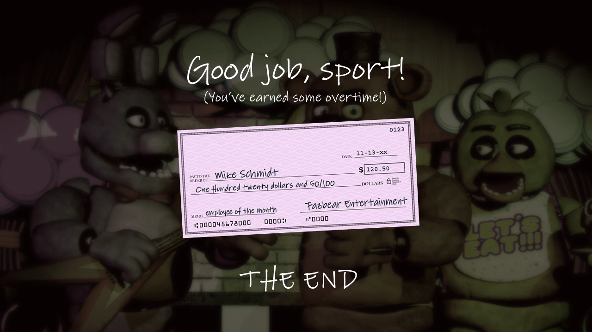
O primeiro guarda noturno que o jogador controla na Freddy Fazbear's Pizza. Ele aceita o emprego para monitorar o local durante o período da meia-noite às seis da manhã, precisando gerenciar as portas de segurança e a energia limitada do escritório para evitar os ataques dos robôs. Mais tarde na história, revela-se que sua persistência está ligada a segredos de sua própria família.
Five Nights at Freddy's 2 (2014) — Jeremy Fitzgerald
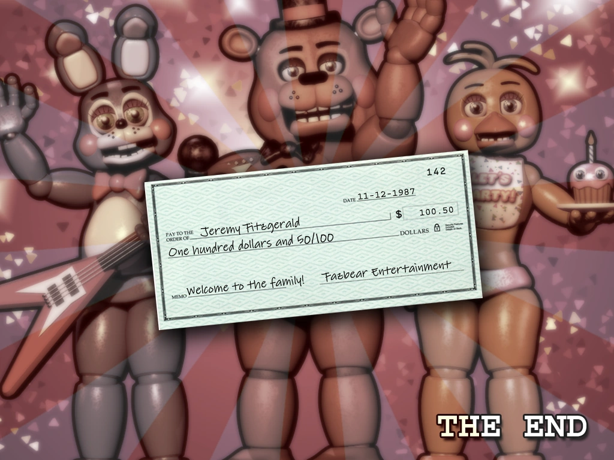
O guarda noturno contratado para trabalhar no estabelecimento remodelado da Freddy Fazbear's Pizza. Ele monitora o local durante o turno da noite e enfrenta o desafio de trabalhar em um escritório sem portas de segurança, utilizando uma máscara vazia de animatrônico para se camuflar e enganar os robôs que entram na sala.
Five Nights at Freddy's 3 (2015) — O Guarda Sem Nom
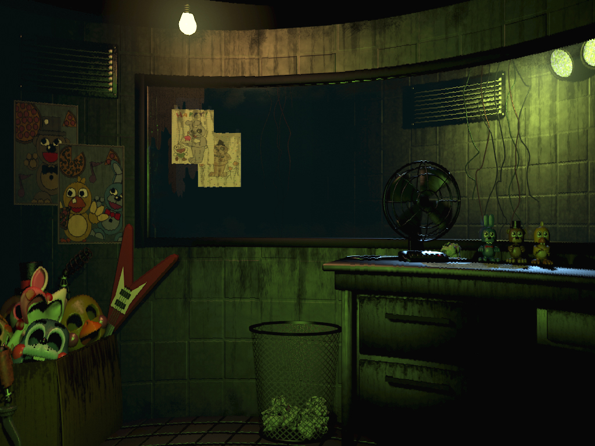
O funcionário anônimo contratado para atuar como segurança na atração de terror Fazbear's Fright: The Horror Attraction. Ele é responsável por testar e reiniciar os sistemas de áudio, câmera e ventilação do local através de um monitor, enquanto lida com problemas mecânicos causados por falhas nos equipamentos antigos colocados no prédio.
Five Nights at Freddy's 4 (2015) — The Crying Child
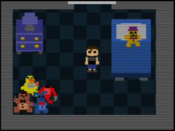
O jovem protagonista do quarto jogo da franquia. Ele sofre bullying constante de seu irmão mais velho e passa os dias que antecedem a sua festa de aniversário aterrorizado. Durante as noites, ele fica trancado em seu próprio quarto e precisa usar uma lanterna e sua audição para se defender das versões monstruosas que tentam invadir o local pelos corredores, armário e cama.
FNaF World (2016) — O Animador / O Jogador
A presença que comanda as ações das equipes de personagens neste spin-off de RPG. Embora o jogo seja focado nas batalhas em turnos e na exploração do "Mundo Animatrônico", a lore secundária do título mostra esse operador interagindo com uma figura misteriosa em telas escuras para tentar consertar o código do universo digital.
Five Nights at Freddy's: Sister Location (2016) — Michael Afton
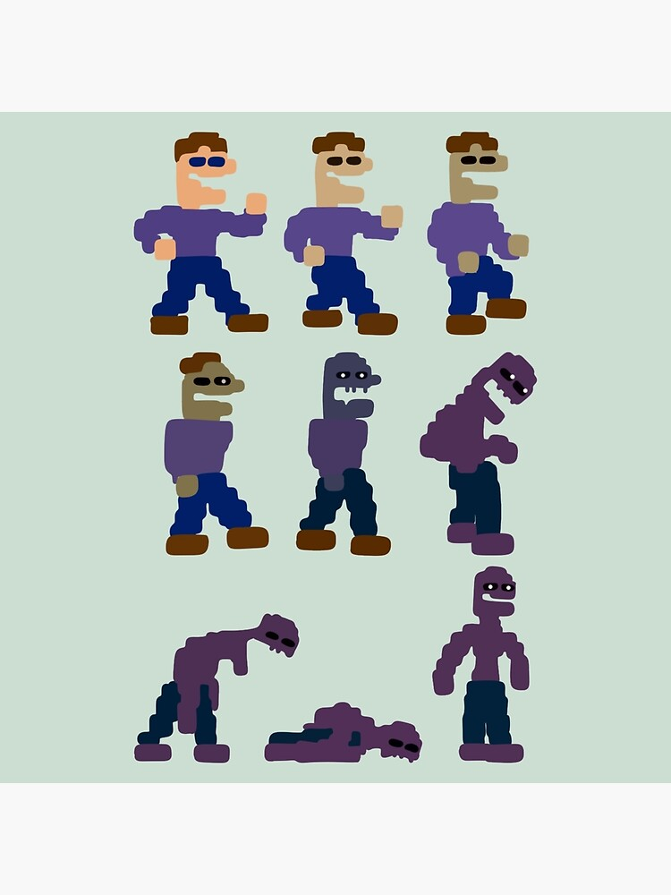
O protagonista que assume o cargo de técnico noturno de manutenção nas instalações subterrâneas da Circus Baby's Entertainment and Rental. Seguindo orientações de seu pai, seu objetivo prático é descer diariamente pelo elevador industrial para reparar os robôs de aluguel e investigar os incidentes técnicos que ocorreram no local.
Freddy Fazbear's Pizzeria Simulator (2017) — Henry Emily
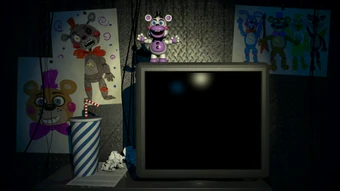
O co-fundador original da Fazbear Entertainment e o gênio mecânico responsável pela criação dos primeiros robôs da franquia junto com William Afton. Após anos desaparecido devido a tragédias pessoais envolvendo sua filha, Henry retorna para arquitetar um plano final: construir uma falsa pizzaria de simulação para atrair e prender todos os animatrônicos restantes em um incêndio definitivo.
Ultimate Custom Night (2018) — O Prisioneiro
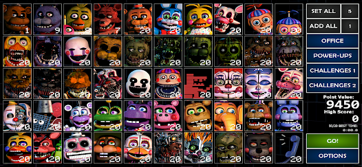
O operador técnico controlado pelo jogador neste título de customização em massa. Ele fica preso em um escritório sem saída e precisa coordenar dezenas de ferramentas defensivas simultâneas — como portas elétricas, tubulações de ar condicionado, aquecedores, caixas de música e geradores de energia — para sobreviver a ataques ininterruptos.
Five Nights at Freddy's: Help Wanted (2019) — O Testador de Jogos (Beta Tester)
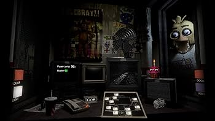
O funcionário terceirizado encarregado de testar e validar o "The Freddy Fazbear Virtual Experience", um software de realidade virtual desenvolvido para limpar a reputação da marca. O jogador interage com os módulos de programação e descobre arquivos ocultos deixados por desenvolvedores anteriores que relatam anomalias no sistema.
Five Nights at Freddy's: Special Delivery (2019) — O Cliente do Serviço Delivery
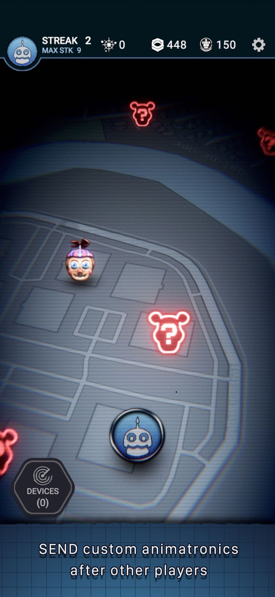
O usuário final que contrata o serviço de assinatura domiciliar "Fazbear Funtime Service". Ele interage com o aplicativo de realidade aumentada em seu próprio smartphone para rastrear e gerenciar pacotes que chegam à sua residência, precisando lidar diretamente com os erros na logística de entrega dos produtos eletrônicos.
Five Nights at Freddy's: Security Breach (2021) — Gregory
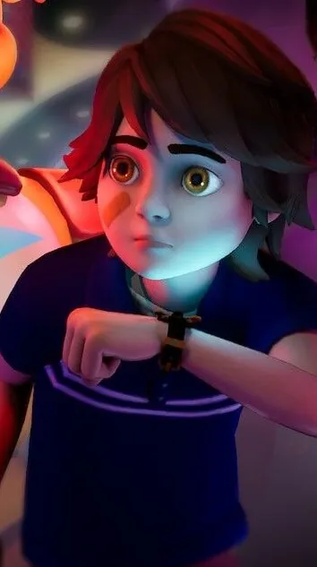
Um garoto sem teto que acaba ficando preso por acidente dentro do gigantesco complexo tecnológico Mega Pizzaplex após o horário de fechamento. Ele se torna o alvo principal do sistema de segurança e dos robôs caçadores, precisando usar sua agilidade, ferramentas como o Faz-Watch e os dutos de ventilação para encontrar uma rota de fuga até o amanhecer.
FNAF Security Breach: Ruin (2023 - DLC) — Cassie
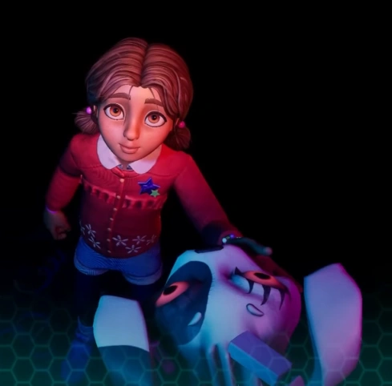
A protagonista da expansão de Security Breach. Ela é a melhor amiga de Gregory e decide invadir as ruínas perigosas e desabadas do Pizzaplex abandonado após receber uma transmissão de rádio com um pedido desesperado de socorro do garoto. Para avançar pelos destroços, ela utiliza uma ferramenta de manutenção e uma máscara especial de realidade virtual.
Five Nights at Freddy's: Help Wanted 2 (2023) — O Técnico
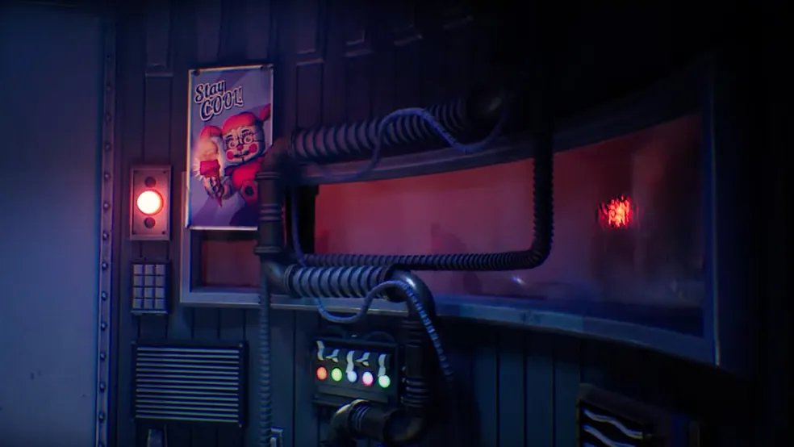
O protagonista humano controlado em perspectiva de primeira pessoa. Ele é contratado como funcionário de manutenção da Fazbear para realizar tarefas técnicas reais em cenários de simulação virtual, executando testes de lógica, reparos de fiação nos robôs antigos, preparação de alimentos e segurança em níveis subterrâneos.
Five Nights at Freddy's: Secret of the Mimic (2025) — O Investigador / Operário Técnico
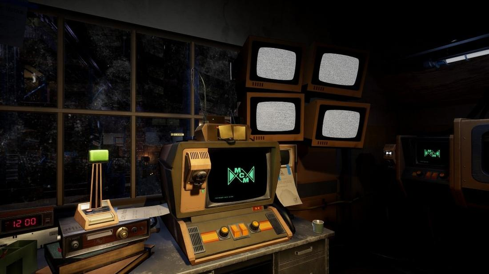
O profissional técnico encarregado de explorar e inventariar os arquivos de uma fábrica de montagem mecânica antiga. Ele manipula sistemas de maquinários industriais primitivos e ferramentas de elevação de carga para desenterrar os projetos originais e as placas de circuito dos primeiros protótipos de inteligência artificial da empresa.